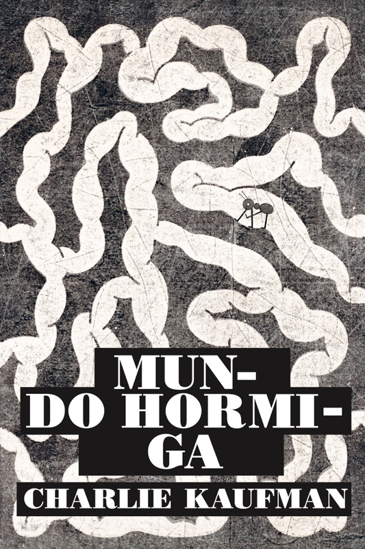

Primera novela de Charlie Kaufman.
todostuslibros.com · Mundo hormiga4Sí. Recordar el futuro es más o menos lo mismo que recordar el pasado; cuanto más te alejas del tiempo en el que estás, más borroso se vuelve. En ambas direcciones.
5la memoria es una suerte de mapa, pero hecho a mano, incompleto y lleno de errores
25un parásito por descubrir. Imagino que una criatura así, de ser contagiosa, podría desplazarse de un cerebro a otro, devorando recuerdos y defecando recuerdos digeridos en forma de materia de desecho. En semejante escenario de, cierto es, ciencia-ficción, uno podría verse heredando recuerdos degradados de otros: recuerdos basura, recuerdos fecales, si lo preferís.
28Adónde van las cosas cuando las olvidamos? El milagro es, quizás, que haya un mecanismo con el que atrapar partes del mundo a medida que nos atraviesan. Nada más y nada menos que el milagro de la conciencia. Sin memoria, uno no existe. Quizás aquel aborrecedor del mundo natural que fue Descartes habría estado más acertado de haber dicho: Recuerdo, luego existo. Si somos testigos sin memoria, no somos testigos en absoluto. Un cilindro hueco por el que pasara el aire no recordaría el silbido que produce.
29clase de transferencia de información de mi cerebro al suyo.
12Debemos contemplar la pérdida en todas sus formas, ¿no es así? Pérdida de relaciones, pérdida de amor, pérdida de poder, pérdida de memoria, pérdida de estatus y el pánico que conlleva. Debemos aceptar que la pérdida es un elemento básico de nuestra existencia. El elemento de la ausencia. Todo se perderá
13Perder cosas es aterrador. He perdido tiempo.
14Y más inimaginables aún son las obras perdidas de artistas completamente desconocidos que puede que hayan o no hayan existido.
15Finjamos que el alma existe. Fijamos que no somos el muerto que entretiene al muerto.
21toca inventario lúcido y maduro de mi vida si pretendo ser capaz de competir
30Así soy yo, en una palabra: responsable. Soy un buen hombre. Siempre hago lo correcto. Pero ¿hacer lo correcto es lo correcto? ¿O hacer lo correcto es de cobardes? ¿Lo que no arma revuelo? ¿Eso que nadie te puede echar en cara?
39La vida ha de vivirse hacia delante pero solo puede entenderse hacia atrás
22La mayoría de nosotros somos invisibles —dijo—. Vivimos nuestras vidas sin que quede registro. Morimos, y al poco es como si no hubiésemos vivido. Pero no somos intrascendentes, ya que, por supuesto, el mundo no funciona sin nosotros. Tenemos trabajos. Sostenemos la economía. Cuidamos de los niños y los ancianos. Somos amables con alguien. Asesinamos. Nuestra existencia, la de las personas no visibles, ha de ser reconocida, pero el dilema está en que, una vez reconocida, dejaremos de ser esas mismas personas de verdad no visibles. Esos hermanos Dardenne, esos De Sica, esos Satyajit Ray, son cineastas honorables, talentosos, decentes y, sospecho, cuidadosos, pero el trabajo que realizan va desencaminado. En cuanto los no visibles se ven, dejan de ser no visibles. Esos hombres han perpetuado una ficción.
19Se trata de la auténtica experiencia de ir al cine. Una película no es solo una imagen en la pantalla, el sonido en los altavoces. Es la traducción que el cerebro hace de todo esto. Es el entorno social. Es el año en que la ves, tu edad, el estado de tu matrimonio. Es lo que ha pasado de camino al cine, lo que esperas que suceda después, es quien tienes sentado a cada lado. Es cómo huele. Es quien tienes sentado delante. Quien esté o no esté dando patadas a tu asiento desde detrás. Es tu preocupación por esa llamada del médico. Es el polvo que has echado. O no. O el que estás a punto de echar. O ese que sabes que jamás volverás a echar. Es tu envidia: del director, de la pareja dándose el lote ahí delante. Es las palomitas. Los Conguitos. Que tengas que ir al baño. Que alguien se esté comiendo un oloroso sándwich de atún.
20la película está predeterminada, no como el mundo.
38Los estudiosos del cine nos dicen que una película tiene de media treinta y siete segundos para plantear su argumento, que estamos tan acostumbrados a la forma que registramos la incompetencia y la falta de honestidad con semejante rapidez.
10extinción cultural en masa. En este caso, los pesticidas son el ego, la ambición y la avaricia. Uno quiere que su simiente crezca a expensas de la de los demás, y con ello destruye el ecosistema de las ideas al completo
16Él sabía que evolucionábamos hacia un mundo en el que la fontanería de la emoción humana, esa función del arte tan vital como necesaria, se la iban a apropiar las empresas, el gobierno, los oportunistas, con el fin de controlar, limitar, difamar el espíritu humano.
17en la que para la mayoría la única esperanza de fama reside en proclamarse víctimas ante el mundo, yo me hallo esperanzado
23Una idée fixe, la llaman. En su momento no sabía que se llamaba idée fixe, ni sabía que iba a convertirse en una. No es más que una idea que se me pasa por la cabeza, pensaba. Pero ahí seguía y seguía. Como que me arruinó el resto de ideas futuras.
2Los prejuicios se inoculan en nuestros genes de manera evolutiva. Necesitamos saber que el tigre es un animal peligroso. No necesitamos saber que no todos los tigres lo son. Identificar las personalidades de cada tigre en particular no contribuye a nuestra necesidad de supervivencia. De
6Cuando una persona no entiende a alguien, tiende a considerarlo un tonto». Lo dijo Carl Jung. Una reflexión que contiene su buena porción de verdad. Y, desde luego, Jung ejerció una enorme influencia en mi trabajo, al igual que en todo el siglo veinte, con la introducción de la idea de inconciente colectivo y demás.
8dentro de cada una de nuestras cabezas tenemos emociones personificadas —alegría, miedo, ira— en esencia a la gresca por el dominio? Desde
9Ahora tengo un objetivo. Soy inmune. La película de Ingo es mi vacuna. Es mi maná del cielo. Me doy un festín con ella, y mi mente es una máquina de petacos:
11DeMarcus, poeta de los Apalaches, tallista y profesora de optometría en West Virginia Wesleyan, fue mi primera guía en el interior del mundo laberíntico del ma, el concepto japonés del «espacio intermedio», la interacción entre la mente y el objeto.
32No poder oír tu propia respiración, no poder oír tus propios pensamientos. Ya que en este mundo no hay voz en off. Pensar es diferente. Se da en texto e imágenes. Es una conversación con uno mismo puesta por escrito.
34koo-ahn, que en la tradición budista es una afirmación paradójica diseñada para animar a una persona a que piense más allá de sus modelos de pensamiento comunes.
37test psicológico proyectivo?
1experimento de Chauvin, que sacudió los cimientos mismos del mundo del cine, en teoría debería funcionar si las escenas se reordenaran de manera aleatoria, permitiendo así interpretaciones más complejas y variadas de este mundo cuantizado.
3joie de vivre.
7Fue cosa del zeitgeist sin más? Sin duda, por entonces los futuristas ya habían publicado su manifiesto
18Grund für die Existenz.
24. Mi tren sináptico tiene una nueva parada:
26El hombre elefante: «A veces creo que mi cabeza es así de grande porque está colmada de sueños
27Thomas Dylan de no entrar dócilmente en esta noche quieta
31Os pasaréis vuestra embrutecida existencia experimentando los pequeños placeres de coger lo que no es vuestro, de ir a lugares en los que nos sois bienvenidos, de hincar el codo en el espacio que otra persona ha adquirido legalmente. Y después os moriréis. Enhorabuena: esa es vuestra vida. Espero que estéis contentos con ella. Espero que en vuestro lecho de muerte no os arrepintáis de no haber sentido amor, ni alegría, ni pérdida. Sí, pérdida. Hay una melancolía de intensa dulzura en la experiencia de la pérdida. Es la especia más deliciosa y más fuerte de ese especiero que es la vida. Una pena que no vayas a probarla, colega.
33el opus magnum de Ingo es un milagro de la ingenuidad y el amor del ser humano y, en cuanto tal, ejemplifica a ambos con la luz perfecta de un d--s.
35Pero la horrible realidad es que estoy bajo el dominio de un talento de tercera división que sin duda me desprecia tanto como yo a él, seguramente por haber puesto sobre la mesa sus patéticas intentonas como guionista.
36capturan la brutalidad de la guerra, su peaje emocional,
Primera novela de Charlie Kaufman.
todostuslibros.com · Mundo hormigaLa ficha pública está en Todostuslibros (catálogo CEGAL). Editorial Barrett. Los subrayados salen del ebook de Apple Books ES (15,99 €, id 1597716517, 1 de diciembre de 2021).